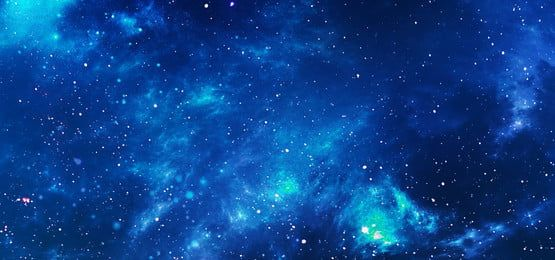

- The Universe is all of space and time (spacetime) and its contents, which includes planets, moons, stars, galaxies,
the contents of intergalactic space and all matter and energy. While the size of the entire Universe is still
unknown, it is possible to measure the observable universe.
- The earliest scientific models of the Universe were developed by ancient Greek and Indian philosophers and were
geocentric, placing Earth at the centre of the Universe.Over the centuries, more precise astronomical observations
led Nicolaus Copernicus to develop the heliocentric model with the Sun at the centre of the Solar System.
In developing the law of universal gravitation, Sir Isaac Newton built upon Copernicus's work as well as
observations by Tycho Brahe and Johannes Kepler's laws of planetary motion.
- Further observational improvements led to the realization that our Solar System is located in the Milky Way galaxy,
which is one of many galaxies in the Universe. It is assumed that galaxies are distributed uniformly and
the same in all directions, meaning that the Universe has neither an edge nor a center. Discoveries in the
early 20th century have suggested that the Universe had a beginning and that it is expanding at an increasing
rate. The majority of mass in the Universe appears to exist in an unknown form called dark matter.
- The Big Bang theory is the prevailing cosmological description of the development of the Universe. Under this theory, space
and time emerged together 13.799±0.021 billion years ago with a fixed amount of energy and matter that
has become less dense as the Universe has expanded. After the initial expansion, the Universe cooled, allowing
the first subatomic particles to form and then simple atoms. Giant clouds later merged through gravity to
form galaxies, stars, and everything else seen today. It is possible to see objects that are now further
away than 13.799 billion light-years because space itself has expanded. This means that objects which are
now 46 billion light years away can still be seen in their distant past, because at that time they were much
closer to us.